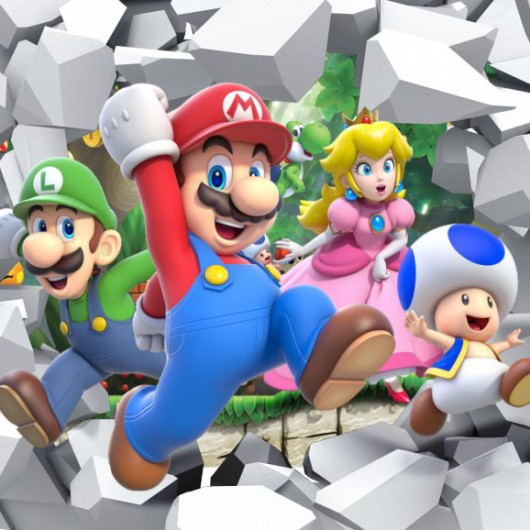
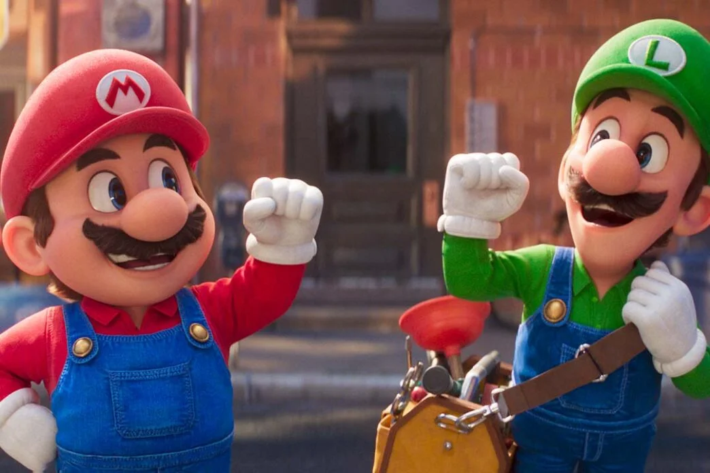
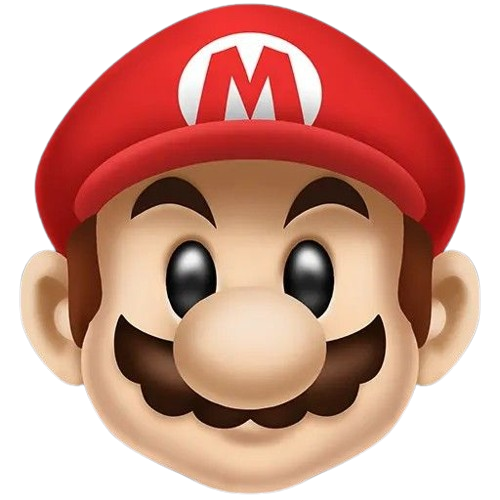
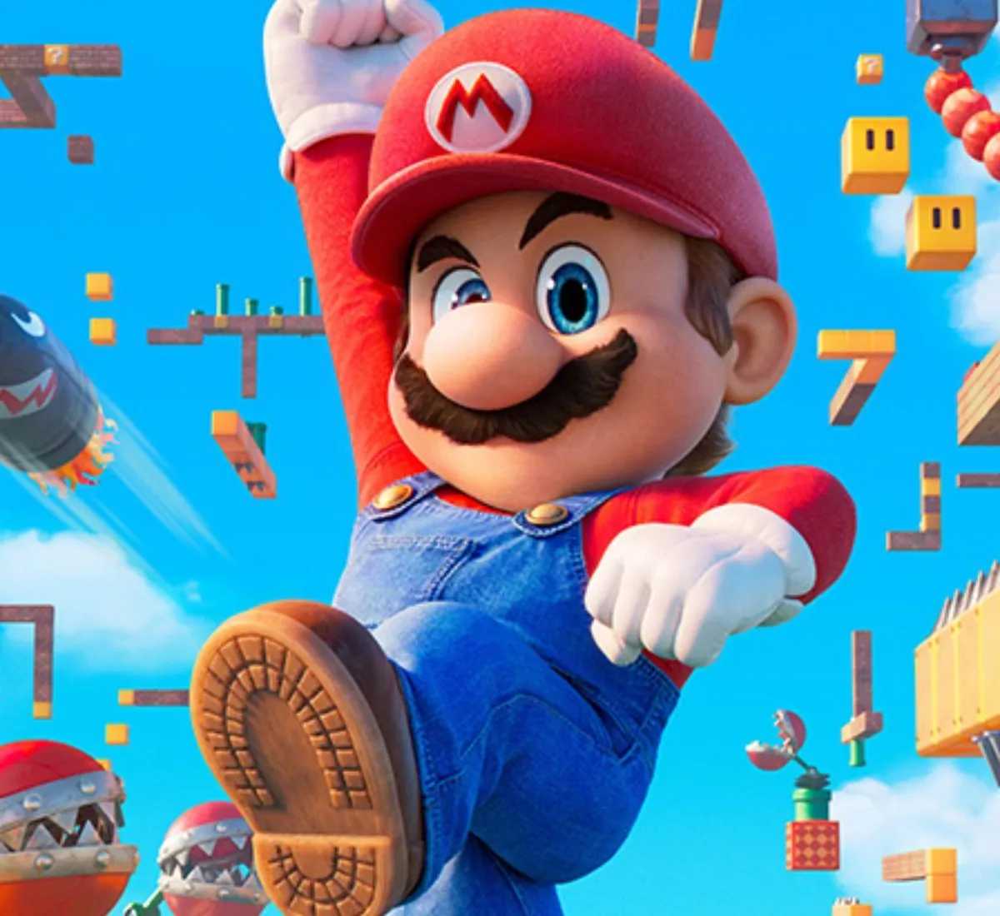

Os jogos mais famosos da Nintendo
Lançado em 1985, "Super Mario Bros." é um dos jogos mais icônicos de todos os tempos.
O jogo segue Mario, um encanador corajoso, em uma missão para resgatar a Princesa Peach do vilão Bowser.
Com seu gameplay inovador de plataforma e design de nível criativo, "Super Mario Bros." definiu os
padrões para jogos futuros e se tornou um clássico instantâneo que cativou gerações de jogadores.

Mario, um encanador corajoso e destemido, embarca em inúmeras aventuras para salvar a Princesa Peach
do malvado Bowser, o rei dos Koopas. Com seu bigode marcante, boné vermelho e traje azul,
Mario é reconhecido instantaneamente em todos os cantos do mundo dos videogames.
O jogo que lançou Mario para a fama, "Super Mario Bros.", é uma jornada
emocionante através do Reino dos Cogumelos.
clássico de plataforma, os jogadores assumem o controle de Mario
enquanto ele atravessa cenários desafiadores,
esmaga inimigos e coleta moedas em sua busca para resgatar a Princesa Peach das garras de Bowser.
Mario e Luigi são referências na franquia,
mas existem outros personagens de Super Mario.
A Princesa Peach é do Reino dos Cogumelos e participa
de várias aventuras ao longo dos jogos, sendo uma
grande amiga dos irmãos. Já Bowser é um dos antagonistas do
encanador e quer dominar o reino da princesa. Mario e
Luigi também têm contrapontos: Wario e Waluigi.
Eles são considerados anti-heróis do universo expandido.
Yoshi é um simpático dinossauro amigo dos irmãos. Ele teve a
própria história em games lançados como uma franquia separada.
O gorila antagonista Donkey Kong é outro personagem
que faz parte da história do Super Mario, inclusive,
o encanador surgiu no game dele. Outra figura
conhecida é Toad, um cogumelo humanoide, parte da equipe
de proteção do Reino dos Cogumelos.

Inicialmente, Mario não foi criado para ser
o protagonista dos jogos da Nintendo. Em
1981, ele apareceu no jogo do Donkey Kong como
um personagem sem nome que tentava resgatar a Lady
das mãos do primata. Na época, o macacão
e a boina eram vermelhos, enquanto a blusa e os
sapatos eram azuis.
Em 1983, Super Mario ganhou o próprio game, chamado
Mario Bros. Nele, era possível combater monstros do
esgoto e conhecer Luigi, o irmão de Mario, que usa
um visual semelhante ao dele. Em 1985, Super Mario Bros
trouxe novos personagens, como Bowser e Super Cogumelo.

Em 1991, outro ícone dos games estreou: o Sonic.
Ele foi criado pela SEGA, concorrente da
Nintendo. Ao trazer novas histórias para o
Super Mario, a empresa teve que bolar as melhores
estratégias. Uma delas foi o lançamento de Super
Mario 64, que deu muito certo. Esse jogo era
tridimensional com trajeto não linear, o que tornava
a experiência ainda mais divertida. Nos anos
90, o público também conheceu outros jogos,
como Mario is Missing e Mario’s Tennis.
O personagem chegou às telonas com o longa Super
Mario Bros, mas a bilheteria não foi tão boa
quanto o esperado.

Nessa fase, o universo do Super Mario expandiu-se
com o lançamento de diversos games. Eles
tinham recursos e cenários diferenciados,
que só ajudaram a trazer mais fãs para a franquia.
A renovação do universo foi muito importante para
manter a franquia em alta. Os novos jogos
de Super Mario ganharam detalhes bacanas para atrair
o público, como Super Mario Odyssey de 2017, que
permitiu múltiplos participantes em uma aventura em 3D.
Um grande destaque desse período é que Super Mario
ganhou uma nova chance nas telonas, com a animação
Super Mario Bros. O Filme. Lançada em 2023,
a obra traz uma aventura de Mario e Luigi com a
presença de vários personagens importantes,
como Princesa Peach e Bowser.

Principais personagens citados:
Luigi
Princesa Peach
Toad
Yoshi
Gostou de saber mais detalhes sobre o encanador mais famoso do mundo? Para expandir ainda mais seus
conhecimentos, confira algumas curiosidades do Super Mario:
 Mario já foi chamado de Jumpman (Saltador);
Mario já teve várias profissões durante os jogos;
O design do Mario foi simplificado com o grande boné e
o bigode por conta da tecnologia da época;
As nuvens e os arbustos dos games têm o mesmo desenho,
algo feito inicialmente para “economizar” nos
traços do jogo;
Koji Kondo criou a música tema tão conhecida no
mundo dos games;
A música Peaches de Jack Black para o filme animado do
personagem viralizou nas redes sociais;
Chris Pratt,
que interpreta Peter Quill em Guardiões da Galáxia,
dublou Mario na nova animação;
Mario e Luigi não têm sobrenome;
Super Mario Bros 3 teve várias fases deletadas da versão
final, porém era possível acessá-las
usando um Game Genie, aliado para o console;

.png)